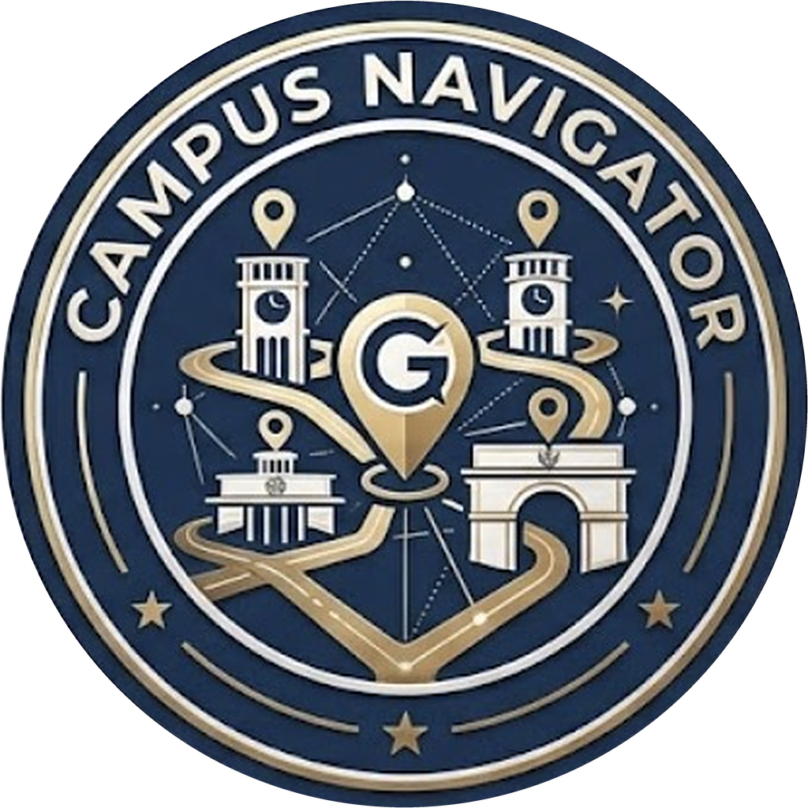

__MAP_HERO__

Campus NavigatorFind your way around campus.
Walking directions that follow real footpaths, your timetable and GPA, and a guide for your first year. Choose your university to start.
Your university
-
__CAMPUS_LIST__
In every campus app
- Step-by-step directions with voice, rerouting and live trip sharing.
- Timetable, exams and GPA with reminders before each class.
- A first-year guide for freshers, and campus updates for everyone.
Each university has its own app and accounts; we'll remember your choice on this device. Designed, developed and run by Joshua Likem Nyoape. An independent project, not an official service of these universities.